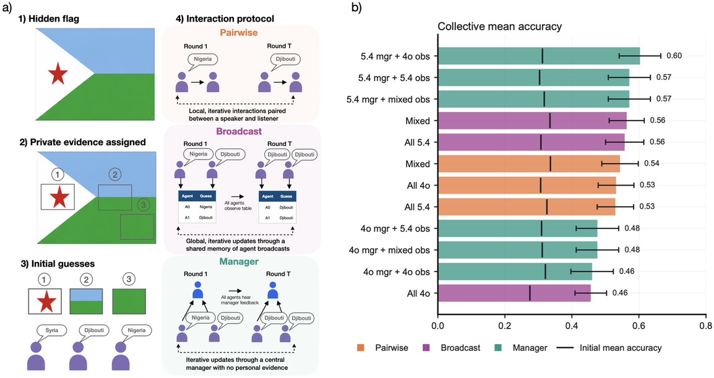
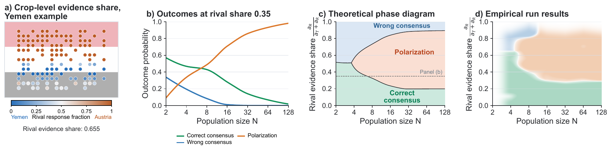
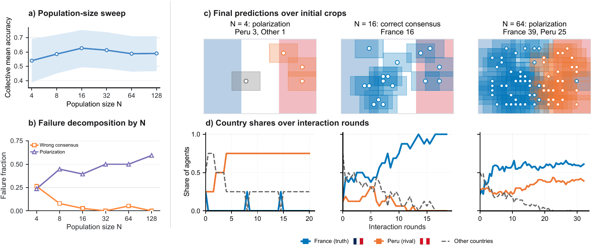

A hidden country flag defines the truth, each agent sees only a private crop, and beliefs spread peer to peer. This toy reproduces the full collective zoo: performance scales non-monotonically with population, social-awareness prompting and diversity help, structure matters. The mechanism underneath: belief collapse at small populations flips into polarization as populations grow, costing accuracy but creating diversity, and a new social circuit attribution technique predicts which agent and view drives the dynamics.
One hidden flag, N bounded agents, each dealt a private crop of flag imagery. Agents state beliefs, observe peers, and weigh social evidence, a minimal substrate for collective belief formation with a known ground truth.
Despite its simplicity the game reproduces rich collective behavior: accuracy first rises then falls with population size, socially aware prompting and diverse teams do better, and organizational structure shifts outcomes strongly.
The core finding: small populations suffer collective belief collapse onto a wrong consensus, while larger ones polarize. Polarization explains the large-N performance decline, but the resulting belief diversity is itself a resource.
Social circuit attribution predicts which agent, and which view, matters most to the collective dynamics, and the paper verifies those predictions with direct causal interventions on agents.



Source table · Agent-level metrics for the selected communication schedule. Delta A_i is the em (8 rows)
| Agent | (out of 10) | p_i | D_i | E_i | S_i | A_i |
|---|---|---|---|---|---|---|
| A0 | 0 | 1 | 19.4 | 0.47 | 0.47 | 0.50 |
| A1 | 10 | 0 | 14.9 | 0.73 | 0.00 | 0.00 |
| A2 | 0 | 1 | 16.4 | 1.01 | 1.01 | 0.13 |
| A3 | 0 | 1 | 22.9 | 0.46 | 0.46 | 0.13 |
| A4 | 0 | 1 | 12.9 | 1.81 | 1.81 | 0.75 |
| A5 | 10 | 0 | 24.6 | 0.39 | 0.00 | 0.00 |
| A6 | 0 | 1 | 15.6 | 0.64 | 0.64 | 0.13 |
| A7 | 0 | 1 | 16.6 | 1.19 | 1.19 | 0.63 |
Abstract
Emergent coordinated behaviors of AI agents are starting to present critical safety risks. A key phenomenon driving these behaviors is the rapid formation and spread of beliefs about the world, and mechanistic understanding is crucial for collective alignment. To this end, we introduce the Flag Game, a toy model for studying the mechanisms of collective belief formation. Concretely, a hidden country flag defines the ground truth, and each bounded agent directly observes only a private crop but can exchange beliefs and weigh social evidence from peers. Despite its simplicity, the Flag Game reproduces rich collective phenomenology: non-monotonic scaling of performance with population size, accuracy gains from social-awareness prompting and team diversity, and strong effects of organizational structure. In particular, we identify that collective belief collapse at small population sizes turns into collective belief polarization as the population grows. This polarization causes the performance decline at large population sizes, but creates diversity in collective beliefs. Finally, we dissect the mechanisms underlying collective belief collapse and polarization with two complementary approaches. We first introduce social circuit attribution, a technique to predict which agent, and what view, matters most to collective dynamics, and verify its predictions by causal interventions on agents, tracing how agent patching changes collective outcomes. However, the efficacy of causal interventions on agents decreases as the population grows. We therefore develop a statistical mechanical theory for larger populations and verify that it matches the empirical phase diagram. Together, these results take a first step toward mechanistic swarm interpretability, a science of how the properties of individual agents and their communication give rise to emergent collective behavior.